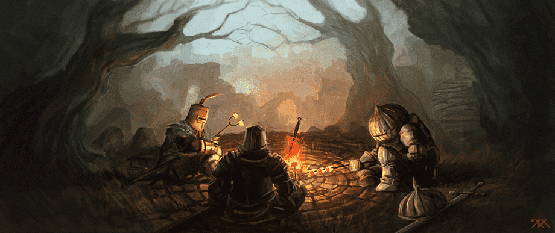
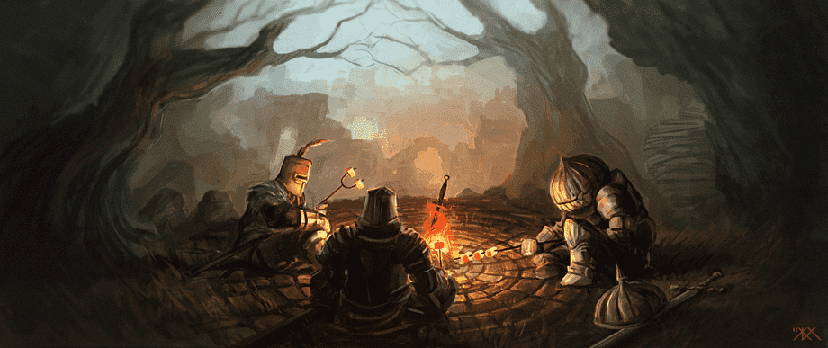
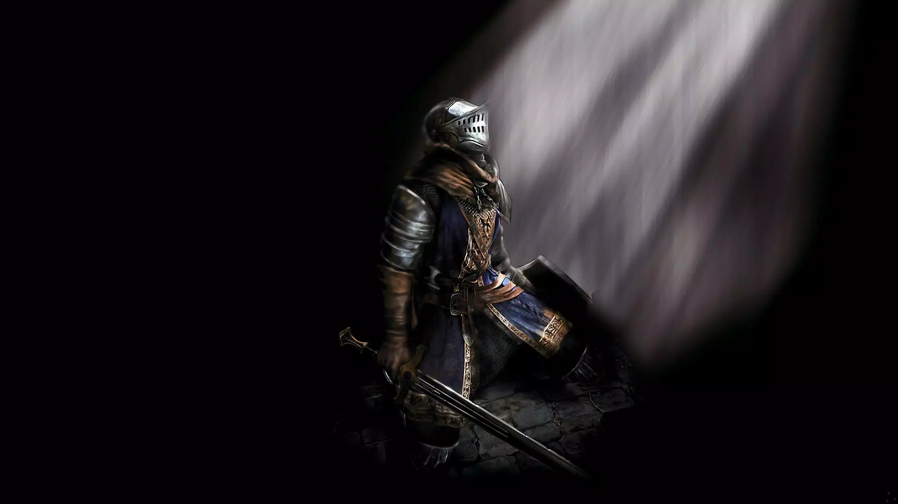
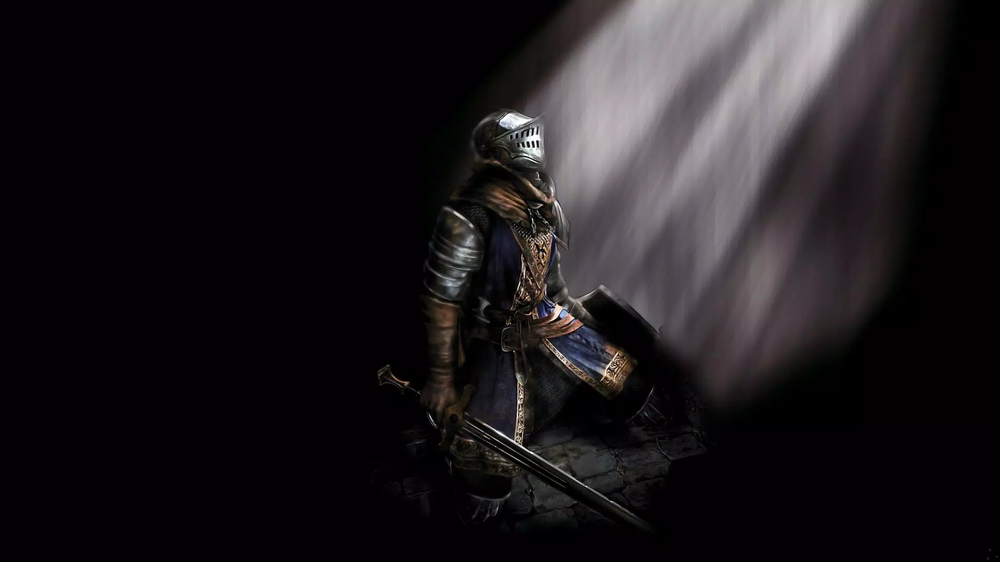

Historia de Dark Souls
La historia de Dark Souls se desarrolla en un mundo oscuro y desolado, donde los reinos están en decadencia y la llama que representa la esperanza y la vida se está apagando. Los jugadores asumen el papel de un personaje no muerto que es elegido para cumplir con una profecía y restaurar la llama, prolongando la era actual.
A medida que los jugadores exploran el mundo de Lordran, descubren una narrativa fragmentada y enigmática que se presenta de manera no lineal. A medida que avanzan, encuentran personajes intrigantes y jefes imponentes que ofrecen pistas sobre la historia y los eventos pasados.
La trama de Dark Souls se centra en la lucha constante entre la Luz y la Oscuridad, así como en las consecuencias de las acciones de los dioses y los seres humanos. A medida que los jugadores avanzan, descubren las implicaciones de sus elecciones y cómo afectan al mundo en el que se encuentran.
La historia de Dark Souls es conocida por su complejidad y profundidad, y gran parte de ella se presenta de manera implícita a través de descripciones de objetos, diálogos y eventos del juego. Los jugadores deben unir las piezas del rompecabezas por sí mismos, lo que ha contribuido a su misterio y a su estatus como un juego de culto en la industria de los videojuegos.
 

 
